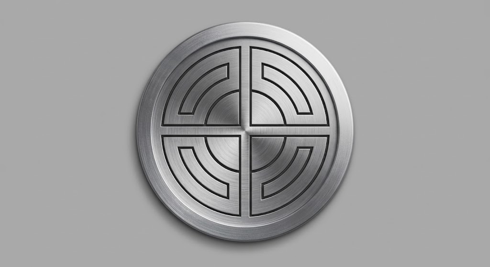
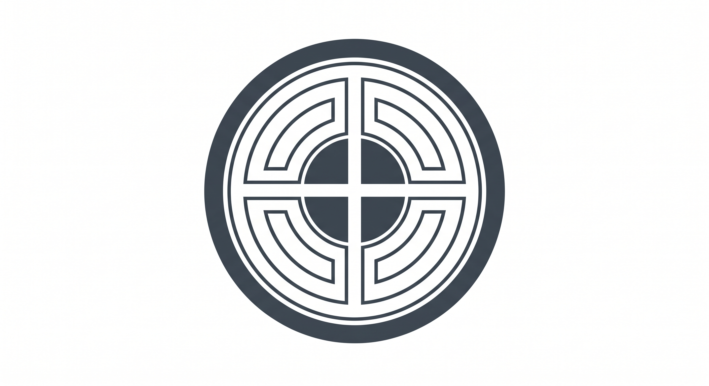
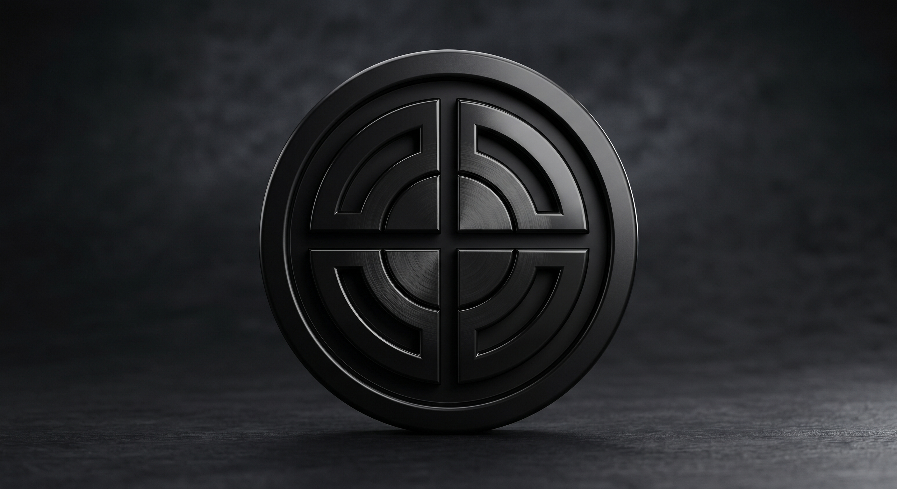

Source A
Silver dimensional coin
Strong as an editorial or social render. Material, shadow and hairline detail collapse inside a 22 px product lockup.
Best roleMarketing render
Three founder-supplied treatments, judged for a dark AI product shell and a 22 px login lockup.

Strong as an editorial or social render. Material, shadow and hairline detail collapse inside a 22 px product lockup.

The clearest geometry and the only source that survives tracing into one-color SVG, favicon and small product UI.

The most premium atmosphere, but too low-contrast for the login header. Keep it for large-format brand moments only.
The identity comes from the concentric quadrant geometry, not the metal finish. Tracing B into filled vector shapes gives the same mark one clean silhouette at 16, 24 and 40 px, while A and C become artwork reserved for larger surfaces.